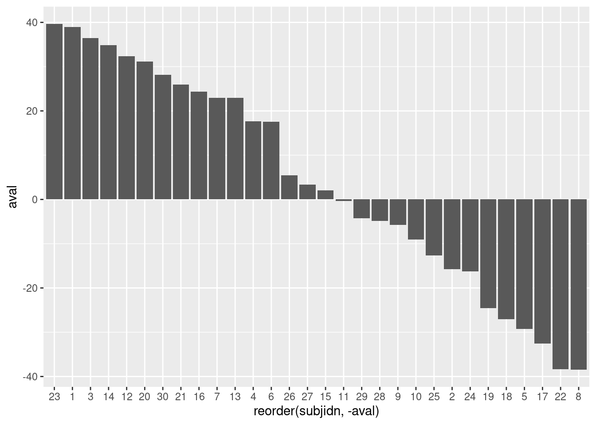
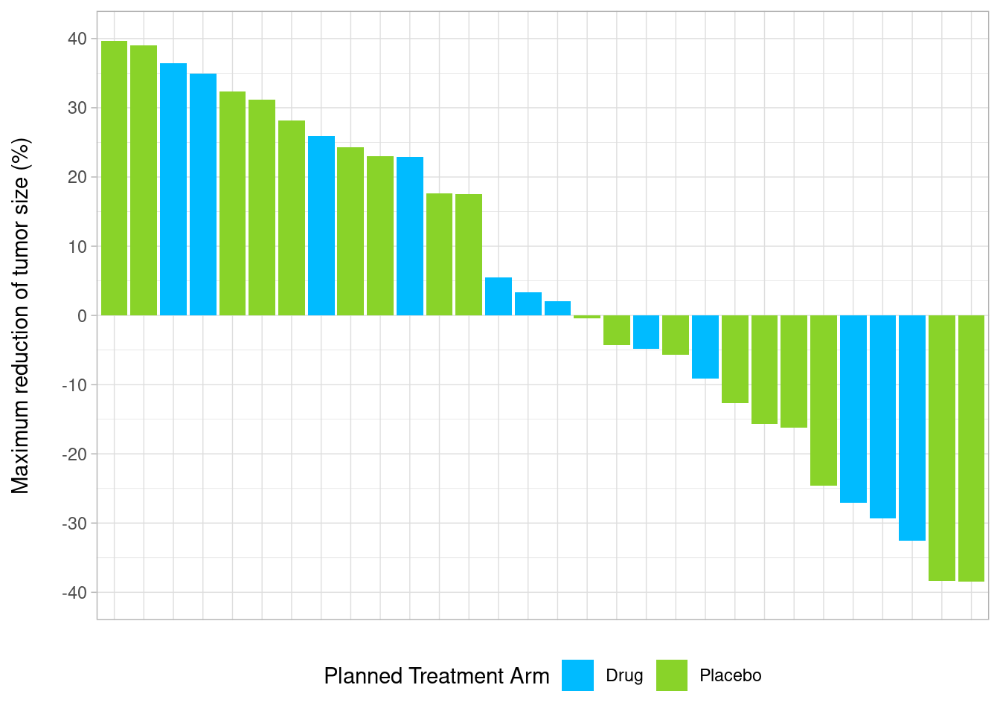
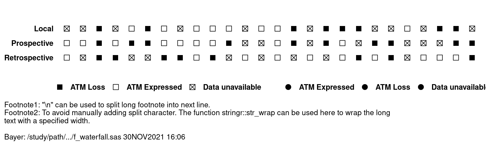
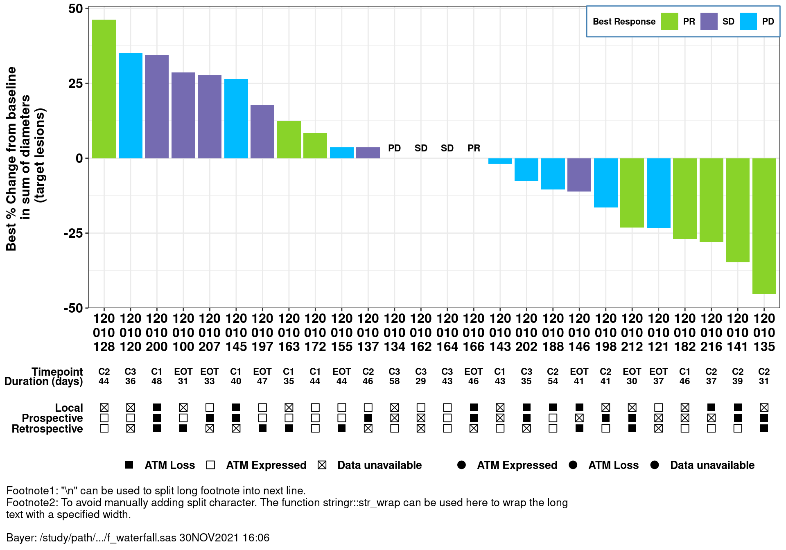

6.1 Examples
6.1.1 Swimmer Plot
For this example we use the swimplot package for plotting. It makes the creation of swimmer plots very easy and is based on ggplot2 and thus allows nice customizations. However, if even more customization is required, swimmer plots can also be created by using ggplot2 only.
A little demo how you could use the package is given below, in case you would like to find out more, you can check out this.
6.1.1.1 Packages and Sample Data
# Packages
library(haven)
library(swimplot)
library(dplyr)
# Data
adam_path <- "https://github.com/phuse-org/TestDataFactory/raw/main/Updated/TDF_ADaM/"
adsl <- haven::read_xpt(paste0(adam_path, "adsl.xpt"))
adae <- haven::read_xpt(paste0(adam_path, "adae.xpt"))
adtte <- haven::read_xpt(paste0(adam_path, "adtte.xpt"))We have to apply some changes to the data so that they can be processed by the plot functions later on. The number of subjects is limited to 50 for display purposes and we create our own response duration variable because we only have the start date of the event given in those data.
adsl_new <- adsl %>%
select(USUBJID, ARM, TRTDURD, SEX) %>%
slice(1:50)
adae_new <- adae %>%
select(USUBJID, AEDECOD, AESEV, AEREL, ASTDY) %>%
filter(USUBJID %in% adsl_new$USUBJID & ASTDY >= 0)
adtte_new <- adtte %>%
select(USUBJID, EVNTDESC, AVAL) %>%
filter(USUBJID %in% adsl_new$USUBJID & EVNTDESC != "Study Completion Date")
random_duration_of_events <- sample(1:25, nrow(adtte_new), replace = T)
adtte_new <- adtte_new %>%
bind_cols(random_duration_of_events) %>%
mutate(Resp_end = AVAL + random_duration_of_events )
adsl_new <- as.data.frame(adsl_new)
adae_new <- as.data.frame(adae_new)
adtte_new <- as.data.frame(adtte_new)6.1.1.2 Basic swimmer plot
A basic swimmer plot just consists of a simple bar chart.
swimmer_plot(df=adsl_new,
id='USUBJID',
end='TRTDURD',
fill='lightblue',
width=.85)
Now, treatment information is added.
arm_plot <- swimmer_plot(df=adsl_new,
id='USUBJID',
end='TRTDURD',
name_fill='ARM',
id_order='ARM',
col="black",
alpha=0.75,
width=.8)
arm_plotThe plot could be stratified by any other variable of interest, in this case: SEX.
swim_plot_stratify <-swimmer_plot(df=adsl_new,
id='USUBJID',
end='TRTDURD',
name_fill='ARM',
col="black",
alpha=0.75,
width=.8,
base_size=14,
stratify= c('SEX'))
swim_plot_stratify
6.1.1.3 Adding adverse event information to the plot
AE_plot <- arm_plot +
swimmer_points(df_points=adae_new,
id='USUBJID',
time='ASTDY',
name_shape='AESEV',
size=2.5,
fill='white',
name_col='AEREL')
AE_plot
6.1.1.4 Adding time-to-event information to the plot
Response_plot <- arm_plot +
swimmer_lines(df_lines=adtte_new,
id='USUBJID',
start ='AVAL',
end='Resp_end',
name_col='EVNTDESC',
size=1)
Response_plot6.1.1.5 Customize plot
Response_plot_with_points <- Response_plot +
swimmer_points_from_lines(df_lines=adtte_new,
id='USUBJID',
start='AVAL',
end='Resp_end',
name_col='EVNTDESC',
size=2) +
scale_fill_manual(name="Treatment",
values=c("Placebo" ="#A9342F",
"Xanomeline High Dose"="#5B7ACE",
"Xanomeline Low Dose"='#FFC300'))+
scale_color_manual(name="Response",
values=c("grey20"))+
scale_shape_manual(name='',
values=c(17,15),
breaks=c('AVAL','Resp_end'),
labels=c('Response start','Response end'))+
guides(fill = guide_legend(override.aes = list(shape = NA))) +
scale_y_continuous(name = "Time since enrollment")
Response_plot_with_points6.1.2 Waterfall Plot
6.1.2.1 Packages and Sample Data
# Packages
library(gridExtra)
library(grid)
# Data
wp <- data.frame(subjidn = 1:30,
trtp = sample(c('Drug','Placebo'), replace = T, 30),
aval = runif(30, min = -40, max = 40))| subjidn | trtp | aval |
|---|---|---|
| 1 | Drug | 39.291594 |
| 2 | Drug | -22.230081 |
| 3 | Placebo | 28.688338 |
| 4 | Placebo | 32.369313 |
| 5 | Drug | -6.381791 |
| 6 | Drug | 27.306600 |
6.1.2.2 Basic Waterfall Plot
Create an initial waterfall plot
basic_waterfall <- ggplot(wp, aes(y = aval,x = reorder(subjidn, -aval))) +
geom_bar(stat = "identity")
basic_waterfall
6.1.2.3 Adding Customizations
Add a few customizations to the waterfall plot
- Bar fill color is determined by trtp value
- Specify custom colors, name the legend
- Specify Y-axis goes from -40 to 40, by increments of 10
- Add in a Y-axis label
- Specify a base theme
- Remove the X-axis
- Move legend to bottom of graph
6.1.2.4 Customized Waterfall Plot
custom_waterfall <- ggplot(wp, aes(y = aval, x = reorder(subjidn, -aval), fill = trtp)) +
geom_bar(stat = "identity") +
scale_fill_manual("Planned Treatment Arm", values = c('#00bbff','#89d329')) +
scale_y_continuous(limits = c(-40,40), breaks = seq(-40, 40, by = 10)) +
ylab("Maximum reduction of tumor size (%)\n") +
theme_light() +
theme(axis.title.x = element_blank(),
axis.line.x = element_blank(),
axis.text.x = element_blank(),
axis.ticks.x = element_blank(),
legend.position = "bottom")
custom_waterfall
6.1.2.5 Study Example
A special waterfall plot layout is needed in a real study. In this layout, biomarker information in the subject level needs to be added at the bottom of the waterfall plots.
The dataset for the plot was derived from ADRS and ADSL in SAS; simulated data is used in this demo.
Simulate Data:
set.seed(100)
n <- 120 # size/records of simulated data
dat_all <-
data.frame(SUBJID = 120010100:(120010100+n-1),
AVAL = c(rnorm(round(0.8*n), 0, 20), rep(0, round(0.2*n))) %>% sample(),
OVERALLRESP = c("PR", "SD","PD") %>% sample(size=n, replace=TRUE),
AMEDGRPN = seq(10, 50, 10) %>% sample(size=n, replace=TRUE),
DOR = rpois(n, 40),
AVISIT = c("C1", "C2", "C3","EOT") %>% sample(size=n, replace=TRUE),
ATMLOSS_L = c("E", "L", "Data unavailable") %>% sample(size=n, replace=TRUE),
ATMLOSS_P = c("E", "L", "Data unavailable") %>% sample(size=n, replace=TRUE),
ATMLOSS_R = c("E", "L", "Data unavailable") %>% sample(size=n, replace=TRUE),
IDFOOT = "Bayer: /study/path/.../f_waterfall.sas 30NOV2021 16:06"
) %>%
mutate_at(vars("OVERALLRESP", "DOR", "IDFOOT"), as.character)- X: SUBJID
- Y: AVAL (derived from ADRS.AVAL when ADRS.PARAM = Maximum Tumor Reduction (%))
- Label: OVERALLRESP (derived from ADRS.AVAL when ADRS.PARAM = Best Overall Response)
- Subset: AMEDGRPN (5 groups)
- A graph function is created in the real study for different analysis groups, in this demo, we subset data to AMEDGRPN = 50.
| SUBJID | AVAL | OVERALLRESP | AMEDGRPN | DOR | AVISIT | ATMLOSS_L | ATMLOSS_P | ATMLOSS_R |
|---|---|---|---|---|---|---|---|---|
| 120010100 | 28.56603 | SD | 50 | 31 | EOT | Data unavailable | E | L |
| 120010120 | 35.14751 | PD | 50 | 36 | C3 | Data unavailable | E | Data unavailable |
| 120010121 | -23.24839 | PD | 50 | 37 | EOT | E | Data unavailable | Data unavailable |
| 120010128 | 46.20594 | PR | 50 | 44 | C2 | Data unavailable | E | E |
| 120010134 | 0.00000 | PD | 50 | 58 | C3 | Data unavailable | Data unavailable | E |
| 120010135 | -45.43851 | PR | 50 | 31 | C2 | Data unavailable | L | L |
Create a waterfall plot with simulated data and below customization
- Add x/y-axis labels through function labs
- SUBJID has long digits, below functions are used to avoid overlapping at x-axis:
- function stringr::str_wrap: add split character between digits
- function gsub: add space between digits to enable the use of str_wrap
- function stringr::str_replace_all: remove space
- Specify legend title, order/colors (similar to SAS sgplot - dattrmap)
- Annotation on the top of the bar when Y=0
- Adjust background, legend, and size/color/font of x/y-axis aesthetics through Theme
waterfall.plot <- dat %>% ggplot(aes(reorder(SUBJID, -AVAL), AVAL, fill =OVERALLRESP)) +
geom_bar(stat="identity") +
labs(x = "Subject",
y = "Best % Change from baseline \n in sum of diameters \n (target lesions)\n") +
scale_x_discrete(labels = function(x) stringr::str_wrap(gsub("([0-9])([0-9])", "\\1 \\2 ", x),
width = 5) %>%
stringr::str_replace_all(" ", "")) +
scale_fill_manual("Best Response",
breaks = c("PR", "SD","PD"),
values=c("PR"='#89d329',
"SD"="#756bb1",
"PD"='#00bbff')) +
geom_text(aes(label = if_else(AVAL == 0,OVERALLRESP,""),fontface="bold"),
vjust = -1,
size=3,
color="black") + theme_bw() +
theme(
axis.text = element_text(size=12,color="black",face = "bold"),
axis.title.y = element_text(size=12, face="bold"),
axis.title.x = element_blank(),
legend.background = element_rect(color = "steelblue", linetype = "solid"),
legend.justification = c(1, 1),
legend.position = c(1, 1),
legend.direction = "horizontal",
legend.text = element_text(size=8, color = "black", face = "bold"),
legend.title = element_text(size=8, color = "black", face = "bold"),
plot.caption = element_text(hjust = 0, size = 10, color = "blue"),
plot.caption.position = "plot"
)
waterfall.plot
As requested from the study, more information at subject level needs to be added in the bottom of the waterfall plots. Thus, two more plots are created (add-in plot1/2) to display the subject level information.
- Add-in plot 1: visit and duration of response information at subject level
var <- c("DOR", "AVISIT")
var_label <- c("Duration (days)", "Timepoint")
add.plot1 <- dat %>%
reshape2::melt(measure.vars = eval(var), value.name = "label", variable.name = "layer") %>%
mutate(layer = factor(layer, levels = var, labels = var_label)) %>%
ggplot(aes(reorder(SUBJID, -AVAL))) +
geom_text(aes(y = layer, label = label), size = 3, fontface = "bold") +
labs(y = "", x = NULL) +
theme_minimal() +
theme(
axis.text.y = element_text(
size = 10,
colour = "black",
face = "bold"
),
axis.line = element_blank(),
axis.ticks = element_blank(),
axis.text.x = element_blank(),
panel.grid = element_blank(),
strip.text = element_blank()
) +
coord_fixed(ratio = .8)
add.plot1- Add-in plot 2: biomarker-related information at subject level, footnotes are added in this plot
- wrap long footnote by adding "\n" or using stringr::str_wrap
- display SAS macro variable &idfoot.
Footnotes:
footnote1 <- 'Footnote1: "\\n\" can be used to split long footnote into next line.'
footnote2 <- "Footnote2: To avoid manually adding split character. The function stringr::str_wrap can be used here to wrap the long text with a specified width."
footnote <- lapply(c(footnote1,
footnote2,
"",
dat$IDFOOT[1]),
function(x) stringr::str_wrap(x, width=120)) %>% # apply str_wrap to individual footnote
unlist() %>% # convert list structure to vector
stringr::str_flatten('\n') # add split character(new line) between footnotesvar <- c("ATMLOSS_L", "ATMLOSS_P","ATMLOSS_R")
var_label <- c("Local", "Prospective", "Retrospective")
add.plot2 <- dat %>%
reshape2::melt(measure.vars = eval(var),
value.name = "label",
variable.name = "layer") %>%
mutate(label=case_when(
label == "L" ~ "ATM Loss",
label == "E" ~ "ATM Expressed",
label == "9" ~ "Data unavailable",
TRUE ~ label
)) %>%
mutate(layer = factor(layer, levels = rev(var), labels = rev(var_label))) %>%
ggplot() +
aes(reorder(SUBJID, -AVAL), layer, color=label,shape=label) +
geom_point(size=3)+
scale_shape_manual(breaks = c("ATM Loss","ATM Expressed", "Data unavailable"),
values = c("ATM Loss"=15,"ATM Expressed"=0,
"Data unavailable"=7))+
scale_color_manual(values = c("ATM Loss"="black", "ATM Expressed"="black",
"Data unavailable"= 'black'))+
theme_classic()+
theme(axis.text=element_text(size=10, colour = "black",face = "bold"),
axis.title=element_blank(),
axis.line = element_blank(),
axis.ticks = element_blank(),
axis.text.x = element_blank(),
legend.title = element_blank(),
legend.text = element_text(size=10, color = "black", face = "bold"),
legend.position = "bottom",
panel.border = element_blank(),
panel.grid = element_blank(),
strip.text = element_blank(),
plot.caption = element_text(hjust = 0, size = 10),
plot.caption.position = "plot"
)+
coord_fixed(ratio=.9)+
labs(caption = footnote)
add.plot2
- The following functions are used to combine three plots aligned with x value.
- ggplot2::ggplotGrob
- gridExtra::gtable_rbind
- grid::grid.draw
- Align the three plots with the same x-axis (SUBJID).
- waterfall.plot
- add.plot1
- add.plot2
p1 <- waterfall.plot %>% ggplotGrob()
p2 <- add.plot1 %>% ggplotGrob()
p3 <- add.plot2 %>% ggplotGrob()
gtable_rbind(p1, p2, p3,
size='first') %>% grid.draw()
6.1.3 Spaghetti Plot
6.1.3.1 Packages and Sample Data
# Packages
library(gg.gap)
# Data
set.seed(100)
n <- 50 # number of subjects, each subject has 12 data points
spaghetti_sim <- data.frame(SUBJIDN = rep(1:n,each=12),
X = rep(1:12,n),
Y = c(rgamma((n*12-5), 5, 1), rnorm(5, 200,40)) %>% sample(),
TRT01AN = c("Drug","Placebo") %>% sample(size=n*12, replace=TRUE))| SUBJIDN | X | Y | TRT01AN |
|---|---|---|---|
| 1 | 1 | 6.998788 | Placebo |
| 1 | 2 | 5.381833 | Drug |
| 1 | 3 | 8.597700 | Drug |
| 1 | 4 | 5.774989 | Drug |
| 1 | 5 | 5.275945 | Drug |
| 1 | 6 | 2.945667 | Drug |
6.1.3.2 Basic Spaghetti plot
p_spaghetti <- spaghetti_sim %>%
ggplot(aes(X, Y, group = SUBJIDN, colour = TRT01AN)) +
geom_point() + geom_line(size = 0.3) + theme_bw() +
labs(y="Y values",
x="Months since start of study treatment",
colour = "Actual Treatment for Period 01 (N)") +
theme(legend.background = element_rect(size=0.1, linetype="solid",
colour ="black"),
legend.position="bottom", legend.box = "horizontal")
p_spaghetti6.1.3.3 Spaghetti Plot with Broken Y
Different scales presented in the same plot when outliers are presented, to enlarge the detailed part of small values.
#library(gg.gap)
p_spaghetti_break <- gg.gap(plot=p_spaghetti, tick_width=c(1,70),
segments=c(15,25), rel_heights=c(8,0,1),
ylim=c(0,235))
p_spaghetti_break
6.1.4 Spider Plot
6.1.4.1 Packages and Sample Data
Create a sample data set to visualize
# Packages
library(ggrepel)
# Data
sp <- data.frame(subjidn = rep(1:5, times = c(5,4,5,3,4)),
trtp = rep(c('drug','placebo'), times = c(8,13)),
avisit = c(0:4,0:3, 0:4, 0:2, 0:3),
aval = c(0,5,15,20,20,
0,-10,-20,-15,
0,-30,-25,-35,-30,
0,15,30,
0,-20,-15,-20))| subjidn | trtp | avisit | aval |
|---|---|---|---|
| 1 | drug | 0 | 0 |
| 1 | drug | 1 | 5 |
| 1 | drug | 2 | 15 |
| 1 | drug | 3 | 20 |
| 1 | drug | 4 | 20 |
6.1.4.2 Basic Spider Plot
basic_spider <- ggplot(sp, aes(x = avisit, y = aval, group = subjidn)) +
geom_line()
basic_spider
6.1.4.3 Adding Customizations
Add a few customizations to the spider plot
- Line color is determined by
trtpvalue - Add points to each line
- Add a dashed reference line at Y = 0
- Specify custom colors, name the legend
- Specify Y-axis goes from -40 to 40, by increments of 10
- Add in a Y-axis label
- Add in a X-axis label
- Specify a base theme
- Move legend to bottom of graph
6.1.4.4 Customized Spider Plot
custom_spider <- ggplot(sp, aes(x = avisit, y = aval, group = subjidn, color = trtp)) +
geom_line() +
geom_point() +
geom_hline(yintercept = 0, linetype = "dashed") +
scale_color_manual("Planned Treatment Arm", values = c('#00bbff','#89d329')) +
scale_y_continuous(limits = c(-40,40), breaks = seq(-40, 40, by = 10)) +
ylab("Change in Target Lesion from Baseline (%)\n") +
xlab("Time (weeks)") +
theme_light() +
theme(legend.position = "bottom")
custom_spider6.1.4.5 Subject Labels Customization
Add subject Labels (IDs) at the end of each line
sp_ends <- sp %>%
group_by(subjidn) %>%
top_n(1, avisit) | subjidn | trtp | avisit | aval |
|---|---|---|---|
| 1 | drug | 4 | 20 |
| 2 | placebo | 3 | -15 |
| 3 | placebo | 4 | -30 |
| 4 | placebo | 2 | 30 |
| 5 | placebo | 3 | -20 |
# library(ggrepel)
custom_spider +
geom_text_repel(
aes(label = subjidn),
color="black",
data=sp_ends,
size = 3,
direction = "x",
hjust = 1
)6.1.5 Survival Plot
6.1.5.1 Kaplan-Meier statistics and plotting
In the following example the survfit function from the survival package is used to calculate Kaplan-Meier statistics from time-to-event data. The model statistics can be inspected (using broom - a generic function to extract statistics from R models).
Passing the model to the ggsurvplot function from the survminer package creates a Kaplan-Meier curve. The configuration tries to mimic the known SAS output as close as possible (e.g.number at risk table style etc.).
6.1.5.2 Packages and Sample Data
# Packages
library(survminer)
library(survival)
library(broom)
library(flextable)
# Data
adtte <- haven::read_xpt(
paste0("https://github.com/phuse-org/TestDataFactory/",
"raw/main/Updated/TDF_ADaM/adtte.xpt"))Filter time-to-event parameter and select required variables. The piping command directly passed filtered and selected data to the survfit function and creates the model.
Note: The event parameter from survival function (survival::Surv) is the status indicator, normally 0=alive, 1=death; while ADTTE.CNSR=0 usually means event occurred(e.g., death), ADTTE.CNSR=1 represents censoring. Thus, 1-CNSR is used here to accommodate the CDISC ADaM standard.
This section is under construction
surv_model <- adtte %>%
filter(PARAMCD == "TTDE") %>%
select(STUDYID, USUBJID, PARAMCD, AVAL, CNSR, TRTA) %>%
survfit(Surv(AVAL, 1-CNSR) ~ TRTA, data = .)6.1.5.3 Inspecting fitted survival model
head(tidy(surv_model)) | time | n.risk | n.event | n.censor | estimate | std.error | conf.high | conf.low | strata |
|---|---|---|---|---|---|---|---|---|
| 1 | 86 | 1 | 0 | 0.9883721 | 0.0116961 | 1.0000000 | 0.9659724 | TRTA=Placebo |
| 2 | 85 | 1 | 0 | 0.9767442 | 0.0166390 | 1.0000000 | 0.9454046 | TRTA=Placebo |
| 3 | 84 | 2 | 0 | 0.9534884 | 0.0238163 | 0.9990514 | 0.9100033 | TRTA=Placebo |
| 7 | 82 | 1 | 0 | 0.9418605 | 0.0267913 | 0.9926390 | 0.8936795 | TRTA=Placebo |
| 8 | 81 | 0 | 1 | 0.9418605 | 0.0267913 | 0.9926390 | 0.8936795 | TRTA=Placebo |
| 9 | 80 | 1 | 0 | 0.9300872 | 0.0295973 | 0.9856369 | 0.8776683 | TRTA=Placebo |
6.1.5.4 Plotting custom configured Kaplan-Meier curves without confidence intervals
Note: Lets assume a month is defined as 30.4375 (days); The xscale parameter d_m converts days (input) to month. If six months breaks are required for the numbers-at-risk table this would mean: break.x.by = 182.625 (6*30.4375).
ggsurvplot(
fit = surv_model,
data = adtte,
risk.table = TRUE,
#ylab = ylabs,
xlab = "Months",
linetype = "strata",
conf.int = F,
legend.title = "Randomized Treatment",
legend = c(0.1, 0.1),
#palette = c(color_trt1,color_trt2),
risk.table.title = "Number of subjects at risk",
risk.table.y.text = F,
risk.table.height = .15,
censor.shape = 1,
censor.size = 3,
ncensor.plot = F,
xlim = c(0,250),
xscale = "d_m",
break.x.by = 30.4375,
break.y.by = .1,
ggtheme = theme_survminer(
font.main = c(10, "bold"),
font.submain = c(10, "bold"),
font.x = c(12, "bold"),
font.y = c(12, "bold"),
) + theme(panel.border = element_rect(fill = NA)),
tables.theme = theme_cleantable()
)6.1.5.5 Plotting custom configured Kaplan-Meier curves with confidence intervals
ggsurvplot(
fit = surv_model,
data = adtte,
risk.table = TRUE,
#ylab = ylabs,
xlab = "Months",
linetype = "strata",
conf.int = T,
legend.title = "Randomized Treatment",
legend = c(0.1, 0.1),
#palette = c(color_trt1,color_trt2),
risk.table.title = "Number of subjects at risk",
risk.table.y.text = F,
risk.table.height = .15,
censor.shape = 1,
censor.size = 3,
ncensor.plot = F,
#xlim = c(0,250),
xscale = "d_m",
break.x.by = 30.4375,
break.y.by = .1,
ggtheme = theme_survminer(
font.main = c(10, "bold"),
font.submain = c(10, "bold"),
font.x = c(12, "bold"),
font.y = c(12, "bold"),
) + theme(panel.border = element_rect(fill = NA)),
tables.theme = theme_cleantable()
)